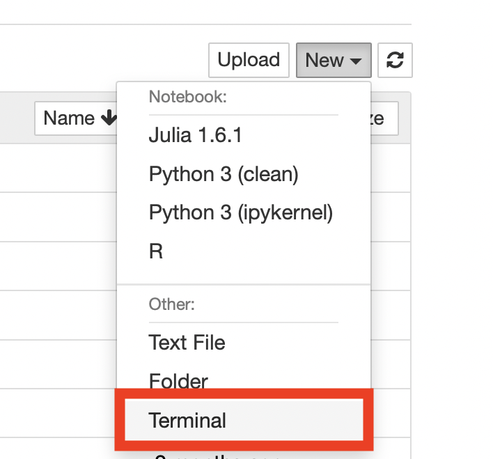
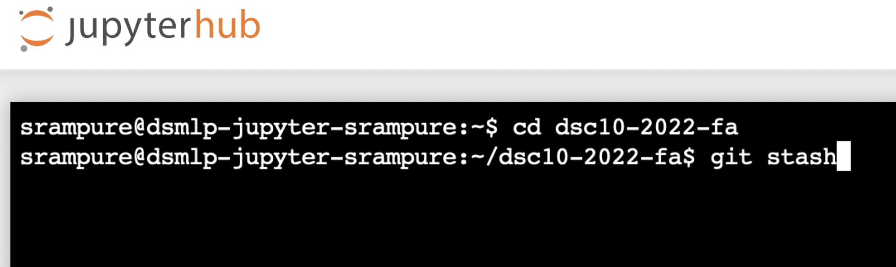

🐞 Debugging
Table of contents
- Cells and the Autograder
- Why does running a particular cell cause my kernel to die?
- How do I quickly run all the cells in a notebook?
- Why does
grader.check_all()fail, if all previous tests passed? - Why does a notebook test fail now, when it passed before and I didn’t change my code?
- Why did a Gradescope test fail, when all the notebook’s tests passed?
- Why do I get an error saying grader is not defined?
- I’m positive I have the right answer, but the test fails. Is there a mistake in the test?
- I accidentally deleted something in a cell that was provided to me – how do I get it back?
- Specific Errors
- DataHub
- When I click a link on the course website, I see a black screen with text and a red error bar that says “Error: undefined.” What should I do?
- When I click a link on the course website, I see a black screen with text and a red error bar. What should I do?
- Why can’t I log in to DataHub?
- How can Extension Students access DataHub?
- My notebook won’t load. Is DataHub down?
- What if I don’t have access to DataHub and I still want to access DSC 10 materials?
Cells and the Autograder
Why does running a particular cell cause my kernel to die?
If one particular cell seems to cause your kernel to die, your code is probably incorrect in a way that is causing the computer to use more memory than it has available. For instance: your code is trying to create a gigantic array. To prevent from crashing the entire server, the kernel will “die”. This is an indication that there is a mistake in your code that you need to fix.
How do I quickly run all the cells in a notebook?
Go to the Cell menu in the top toolbar, then “Run All.” You can also select a certain cell and run all cells before this point, or run all cells after this point. You should run all the cells in your notebook before submitting to confirm that you pass all the tests.
Why does grader.check_all() fail, if all previous tests passed?
This can happen if you “overwrite” a variable that is used in a question. For instance, if Question 1 asks you to store your answer in a variable named stat, and later on in the notebook you change the value of stat, you’ll see the test after Question 1 pass, but the test at the end of the notebook fail. Make sure to avoid using the same variable name for more than one purpose.
Why does a notebook test fail now, when it passed before and I didn’t change my code?
You probably ran your notebook out of order. Re-run all previous cells in order, which is how your code will be graded.
Why did a Gradescope test fail, when all the notebook’s tests passed?
This can happen if you’re running your notebook’s cells out-of-order. The autograder runs your notebook top-to-bottom. If you’re defining a variable at the bottom of your notebook and using it at the top, the Gradescope autograder will fail because it doesn’t recognize the variable when it encounters it.
This is why we recommend running Kernel -> Restart and Run All: it “forgets” all of the variables and runs the notebook from top-to-bottom, just like the Gradescope autograder will. This will highlight any issues. Find the first cell that raises an error. Make sure that all of the variables used in that cell have been defined above that cell, and not below.
Why do I get an error saying grader is not defined?
If it has been a while since you’ve worked on an assignment, the kernel will shut itself down to preserve memory. When this happens, all of your variables are forgotten, including the grader. That’s OK: you’ll just need to re-run all of the cells. The easiest way to do this is by using Kernel -> Restart and Run All.
I’m positive I have the right answer, but the test fails. Is there a mistake in the test?
While you might see the correct answer displayed as the result of the cell, chances are it isn’t being stored in the answer variable. Make sure you are assigning the result to the answer variable. Make sure there are no typos in the variable name.
I accidentally deleted something in a cell that was provided to me – how do I get it back?
There are two solutions:
In this public GitHub repository, you’ll find the “original” versions of all assignments we released this quarter. You can look here and manually add back any necessary code or text that you accidentally deleted.
Suppose you’re working on Lab 5. One solution is go directly to DataHub and rename your
lab05folder to something else, likelab05-old. Then, click the Lab 5 link on the course website again, and it’ll bring you to a brand-new version of Lab 5. Then, you can copy your work from your old Lab 5 to this new one, which should have everything in it.
Specific Errors
A general rule of thumb when debugging is to look at the very last line of an error message. That’s usually the most informative part of the message, and will often tell you directly what’s wrong.
isinstance(..., numbers.Integral)
This error is telling you that the answer should be an integer, but your answer is not. This often happens when you’ve done some intermediate work towards the answer and saved an intermediate result in the answer variable instead of the final result.
Sometimes instead of isinstance(..., numbers.Integral), you’ll see something like isinstance(..., bpd.DataFrame). This is saying that the answer should be a DataFrame, but yours was something else. The rest of the above still applies.
Check the type of your answer variable with type(). Is it what you expected?
... object is not callable
This often happens when you use a default keyword (like str or list) as a variable name, for instance list = [1, 2, 3]. These errors can be tricky because they don’t error on their own, but cause problems when we try to use the name list (for example) later on in the notebook.
To fix the issue, identify any such lines of code, change your variable names to be something else, and restart your notebook.
Python keywords like str and list appear in green text, so be on the lookout if any of your variable names appear in green!
No module named 'babypandas'
This can happen if you click the name of a course other than DSC 10 when logging into DataHub. Here’s how to “switch” your DataHub to DSC 10 mode:
- Click “Control Panel” in the top right.
- Click “Services”, then click “manual-resetter”.
- Click “Reset” (if a pop-up box appears, click okay).
- Log back into DataHub and it should allow you to select a course again – select DSC 10.
Other errors
It can be difficult to decipher the meaning of error messages in Python. Here is a useful guide. You can also ask in office hours, or on Ed, provided you are not posting your code publicly or otherwise giving away the answer in your post. Understanding cryptic error messages is a skill that comes with experience.
DataHub
When I click a link on the course website, I see a black screen with text and a red error bar that says “Error: undefined.” What should I do?
This often happens when clicking multiple assignment or lecture links quickly. Close all of the Jupyter Notebooks you have open, and click links on the course website one at a time. Once one notebook fully loads, click the next link.
This error can also occur if you’re using an unsupported internet browser. Make sure you’re using either Chrome, Firefox, or Safari to access DataHub.
If you’ve already worked on an assignment and then start seeing this error, try going directly to DataHub (datahub.ucsd.edu) to continue working on your assignment.
If all else fails, this issue usually resolves itself with time, so try again in a few hours.
When I click a link on the course website, I see a black screen with text and a red error bar. What should I do?
This is usually what’s called a “merge conflict”, which means that DataHub wasn’t able to combine the versions of the assignments we released with the versions you worked on. This should only happen in rare circumstances.

🚨 Warning! There are several errors that look similar to the image above, but before proceeding carefully read the error message to ensure that it contains the phrase “Your local changes to the following files would be overwritten by merge”. If this is not present in the error message, contact us on Ed with a screenshot. If you do see the above phrase, continue with the steps below.
Go directly to DataHub (datahub.ucsd.edu). You should be taken to a “File Manager” view which lists the folders available in your account.
On the upper right of the page, click the dropdown menu that says “New” and select “Terminal”.
 In the terminal, type
cd dsc10-2023-fa, then hit the enter key to run it. The command will not display anything.Still in the terminal, type
git stash, at which point your terminal window should look like the one below. Then, hit enter to run the command. You should see some output. Finally, go back to dsc10.com and click the link to the assignment you were attempting to work on. It should now load without error. If you still see an error, make a post on Ed with a screenshot of the error you see now.
Why can’t I log in to DataHub?
Log out of all Google accounts or open an incognito window. When prompted, enter your full UCSD email, username@ucsd.edu, as your credentials.
How can Extension Students access DataHub?
Extension students may receive separate accounts for the purpose of accessing DataHub. To look up your account information and reset any additional account passwords, visit this website and enter your AX account in the username field and your UID in the Student ID field (e.g. “axNNNN”, “cs120sp20aa”, etc.)
My notebook won’t load. Is DataHub down?
Sometimes DataHub does have availability issues. Usually it is back up and running again within an hour. In other instances, there are some things you can do to get the notebook running again: Make sure your internet connection is working. If you can, restart your server by clicking the button at the top right labeled “Control Panel”, then select “Stop My Server”, followed by “Start My Server”. If that doesn’t work, try restarting your computer and using a different browser. Whenever you resume working on a notebook, run all cells you’ve previously completed. If your problem persists after trying all these steps, please notify us on Ed.
What if I don’t have access to DataHub and I still want to access DSC 10 materials?
We welcome the general public to use our materials. If you’re not enrolled in the class, you can access all lectures and assignments in our public GitHub repository.